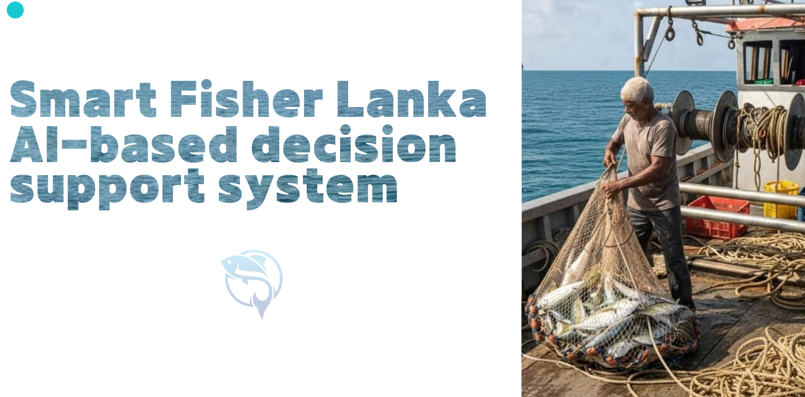

Proposal Presentation
Introduces the research problem, motivation, and the early design direction.


Introduces the research problem, motivation, and the early design direction.

Shows initial implementation, data preparation, and the first working interface concepts.

Focuses on prototype refinement, validation results, and improved presentation quality.

The final walkthrough of the system, findings, and practical impact for sustainable fishing.

Reserved for upcoming assessments and extra presentations requested by the panel.